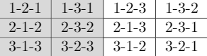

While so far we have implemented 2-D rotations, but in a 3-D coordinate system, what we would really like to do is create a full 3-D rotations. Luckily, any 3-D rotation can be decomposed into a set of three 2-D rotations in sequence. So, for
example, we could first rotate about the z axis, followed by a rotation about the y axis, and then the x axis. The
full rotation would be:
C1C2C3
and is termed a 3-2-1 rotation because we rotate about the 3rd axis first. Note, however, that in the
equation the rotations matrices are ordered 1,2,3. This is because when there is a position (a vector), it will be on the right of the matrices, so the multiplication essentially goes from right to left (3-2-1). Just remember that the math
expressed things from right to left (imagine the vector running through the matrices; the vector starts on the right), while we describe it in written format from left-to-right.
This notation actually introduces 12(!) different ways we can express a 3-D rotation. Any 3-D rotation can be expressed as a sequence of three axis rotations. If two rotations in a row use the same axis, they are redundant, so we have all rotations i-j-k, where i,j,k are either 1,2, or 3 and both i ≠ j and j ≠ k. More precisely, the following ordered sets of rotations about an axis are all valid representations of a rotation in 3-D:
A few comments are in order on these rotations:
THE ORDER IN WHICH THE OPERATIONS OCCURS MATTERS! Sorry for shouting, but it is a very important point and can catch up even experienced rotation experts on occasion. With the exact same angles around the three axes, a 1-2-3 rotation will be very different from a 3-2-1 rotation. So, a 1-2-3 rotation of 30, 40, and 25 degrees is not the same as a 3-2-1 rotation of 25, 40, and 30 degrees.
The shaded rotations on the left are interesting because they repeat one of the axes. The ones on the right differ only in their ordering of the 3 unique axes.
While the representation may be very different, they all represent the same physical phenomenon, a rotation in 3-D space. So, for example, a 1-2-3 rotation of 30, 40, and 25 degrees.
First, let's discuss why different orderings lead to different representations of the same rotation. Consider Figure 2 (a-c) which shows just two rotations in a row (3-2), the rotation around axis 3 being 30 degrees and the rotation around axis 2 being 40 degrees. Then in Figure 2, the same two axis rotations are applied, but in the opposite order (axis 2 by 40 degrees, axis 3 by 30 degrees). Note that the after rotation around axis 2 by 40 degrees, axis 3 is in a different location (figure(d)) then it is in figure(a). This means that the same rotation by 30 degrees around axis 3 leads to very different rotations in the world. This is the reason why the ordering of the axes is critical. Therefore, a (3-2-1) rotation will be very different from a (1-2-3) rotation, even if the angles applied to each axis are the same in both rotations.